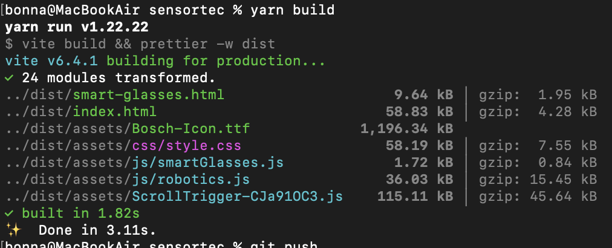
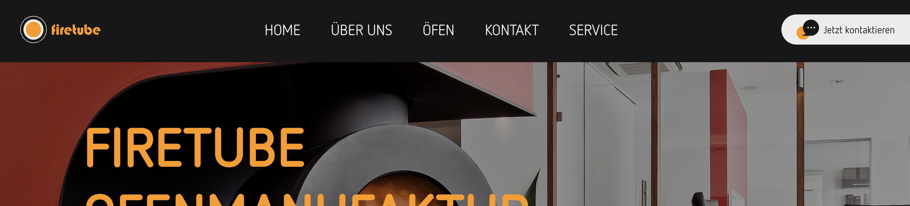

<div class="block">
  <div class="container site-border">

    <h2>Interpreter vs Compiler</h2>
    <p>Interpreter übersetzen bei der Ausführung.</p>
    <p>Compiler übersetzen vor der Ausführung.</p>
    <p>HTML wird vom Browser geparst und in eine DOM Struktur umgewandelt. CSS wird vom Browser geparst und in 
      eine CSSOM Struktur umgewandelt und auf DOM angewendet.
    </p>
    <h2>JSON</h2>
    <p>JavaScript Object Notation ist eine Notation für Objektliterale. Ungeordneter Container von 
      key-value Paaren.
    </p>
    <h2>Asynchronous JavaScript and XML (AJAX):</h2>
    <p>
      AJAX ermöglicht es, Daten asynchron vom Server zu laden, ohne die Seite
      neu zu laden. Dies verbessert die Benutzererfahrung durch dynamische
      Inhalte.
    </p>
    <h2>YAML (YAML Ain't Markup Language)</h2>
    <p>Ist ein menschenlesbares Datenformat, welches für Konfigurationen gedacht ist als
      Altenative für JSON. Die Einrückung spielt hier eine zentrale Rolle:
    </p>
    <pre>
      parent: 
        child1: value
    </pre>
    <h2>Husky</h2>
    <p>Husky ist ein Tool, welches Git Hooks für ein Projekt definiert, die vor dem Commit ausgeführt werden. Damit kann
      zB ein Linter vorher ausgeführt werden. Husky führt Skripte zu bestimmten Git Zeitpunkten aus zB vor commit (pre-commit), 
      beim commit (commit-msg), vor push (pre-push)
    </p>
    <h2>Template Projekt aufbauen</h2>
    <p>Zu einem professionellen Projekt gehören: </p>
    <ul>
      <li>Vite</li>
      <li>Git</li>
      <li>Husky</li>
      <li>ESLint</li>
      <li>Prettier</li>
      <li>JS / TS</li>
      <li>DDEV</li>
      <li>GitGraph</li>
    </ul>
    <h2>Vite</h2>
    <p>
      Vite ist ein modernes Build-Tool, das schnelle Entwicklungsserver und
      optimierte Produktions-Builds bietet. Es nutzt native ES-Module im Browser
      für eine schnellere Entwicklungserfahrung.
    </p>

    <h2>Dateistruktur</h2>
    <h3>public</h3>
    <p>
      Dieser Ordner enthält statische Dateien, die unverändert ins
      Build-Verzeichnis kopiert werden. Beispiele: statische html Seiten,
      Bilder, Fonts, favicon, robots.txt usw. Dateien hier kannst du direkt über
      /dateiname im Browser aufrufen.
    </p>
    <h3>src</h3>
    <p>
      Hier kommt dein kompletter Quellcode rein: Komponenten, Styles, Utils,
      etc. assets/: Bilder, Icons oder kleine Dateien, die importiert werden.
      components/: React- oder Vue-Komponenten. main.tsx / main.ts: Startpunkt
      der App, z. B. ReactDOM.render(<App />, document.getElementById('root')).
      App.tsx / App.vue: Hauptkomponente deiner Anwendung.
    </p>
    <h3>vite.config.js</h3>
    <p>
      Die Konfigurationsdatei für Vite. Hier kannst du z. B.: Aliase definieren
      (@/components → src/components) Plugins hinzufügen (z. B. für
      TypeScript-Checking, React, Vue, PWA) Build-Optionen ändern
      (Output-Verzeichnis, Minifizierung, etc.)
    </p>
    <h3>package.json</h3>
    <p>
      Eine package.json ist eine JSON-Datei (JavaScript Object Notation), die
      Metadaten über dein Projekt enthält – also quasi eine Art „Rezeptbuch“ für
      dein Projekt.
    </p>
    <p>
      "name": "knowledge-base" Name deines Projekts. "version": "1.0.0"
      Versionsnummer, nützlich für Releases oder npm-Pakete. "private": true
      Verhindert, dass das Projekt versehentlich auf npm veröffentlicht wird.
      "scripts" Enthält Befehle, die du über npm run .. ausführen kannst. //Für
      die App wichtig sind vor allem: "dependencies" Bibliotheken, die deine App
      benötigt, um zu laufen (Produktion). Hier z. B. marked für Markdown. //Für
      die Entwicklung wichtig sind: "devDependencies" Entwicklungsbibliotheken,
      die nur während Entwicklung gebraucht werden (Build-Tools, Compiler etc.).
      Hier z. B. vite und sass.
    </p>
    <h3>index.html</h3>

    <h2>Fehlercodes</h2>
    <p>
      HTTP-Statuscodes sind standardisierte Codes, die von Webservern verwendet
      werden, um den Status einer HTTP-Anfrage anzuzeigen. Hier sind einige der
      häufigsten Fehlercodes:
    </p>
    <h3>1xx Informationen</h3>
    <p>
      Diese Codes zeigen an, dass die Anfrage empfangen wurde und der Prozess
      fortgesetzt wird.
    </p>
    <h3>2xx Erfolg</h3>
    <p>Diese Codes zeigen an, dass die Anfrage erfolgreich war.</p>
    <h3>3xx Umleitung</h3>
    <p>
      Diese Codes zeigen an, dass weitere Aktionen erforderlich sind, um die
      Anfrage abzuschließen.
    </p>
    <h3>4xx Client-Fehler</h3>
    <p>
      Diese Codes zeigen an, dass ein Fehler auf der Client-Seite aufgetreten
      ist.
    </p>
    <table>
      <thead>
        <tr>
          <th>Code</th>
          <th>Bedeutung</th>
          <th>Typische Ursachen</th>
          <th>Praxis-Lösung</th>
        </tr>
      </thead>
      <tbody>
        <tr>
          <td>400</td>
          <td>Bad Request</td>
          <td>Ungültige Anfrage, falsches JSON, fehlerhafte Parameter</td>
          <td>Request prüfen, Parameter validieren, richtige Headers senden</td>
        </tr>
        <tr>
          <td>401</td>
          <td>Unauthorized</td>
          <td>Fehlender API-Key / Token, nicht eingeloggt</td>
          <td>Login / Token korrekt setzen, OAuth prüfen</td>
        </tr>
        <tr>
          <td>403</td>
          <td>Forbidden</td>
          <td>Zugriff auf Ressource verweigert</td>
          <td>Berechtigungen prüfen, ACL / File-Settings anpassen</td>
        </tr>
        <tr>
          <td>404</td>
          <td>Not Found</td>
          <td>Falsche URL, Datei gelöscht, falscher Pfad</td>
          <td>
            Pfad/URL prüfen, Datei wiederherstellen, Rewrite-Rules kontrollieren
          </td>
        </tr>
        <tr>
          <td>405</td>
          <td>Method Not Allowed</td>
          <td>POST auf GET-Endpoint</td>
          <td>Methode anpassen, API-Dokumentation prüfen</td>
        </tr>
        <tr>
          <td>408</td>
          <td>Request Timeout</td>
          <td>Langsame Netzwerkverbindung</td>
          <td>Retry-Mechanismus implementieren, Server-Timeout prüfen</td>
        </tr>
      </tbody>
    </table>
    <h3>5xx Server-Fehler</h3>
    <p>
      Diese Codes zeigen an, dass ein Fehler auf der Server-Seite aufgetreten
      ist.
    </p>
    <table>
      <thead>
        <tr>
          <th>Code</th>
          <th>Bedeutung</th>
          <th>Typische Ursachen</th>
          <th>Praxis-Lösung</th>
        </tr>
      </thead>
      <tbody>
        <tr>
          <td>500</td>
          <td>Internal Server Error</td>
          <td>Bug im Servercode, Exception</td>
          <td>
            Serverlogs prüfen, Code debuggen, Fehlerhandling implementieren
          </td>
        </tr>
        <tr>
          <td>501</td>
          <td>Not Implemented</td>
          <td>API oder Server unterstützt die Methode nicht</td>
          <td>Server konfigurieren / Endpunkt implementieren</td>
        </tr>
        <tr>
          <td>502</td>
          <td>Bad Gateway</td>
          <td>Reverse Proxy erreicht Backend nicht</td>
          <td>Backend prüfen, Proxy-Konfiguration prüfen, Firewall</td>
        </tr>
        <tr>
          <td>503</td>
          <td>Service Unavailable</td>
          <td>Hohe Last, Wartungsmodus</td>
          <td>Load balancer, Wartung planen, Ressourcen erhöhen</td>
        </tr>
        <tr>
          <td>504</td>
          <td>Gateway Timeout</td>
          <td>Reverse Proxy wartet zu lange auf Backend</td>
          <td>Backend-Performance prüfen, Proxy-Timeout erhöhen</td>
        </tr>
        <tr>
          <td>505</td>
          <td>HTTP Version Not Supported</td>
          <td>Client sendet inkompatible HTTP-Version</td>
          <td>Client aktualisieren / Server konfigurieren</td>
        </tr>
      </tbody>
    </table>

    <h2>Paketmanager</h2>
    <p>
      Paketmanager sind Tools, die Entwicklern helfen, Bibliotheken und
      Abhängigkeiten in ihren Projekten zu verwalten. Sie ermöglichen das
      einfache Installieren, Aktualisieren und Entfernen von Paketen sowie das
      Verwalten von Versionsabhängigkeiten.
    </p>
    
    <p>Der erste Wert hinter jeder gebuildeten Datei ist die echte Dateigröße auf dem Server. Der zweite Wert
      ist die gzip Größe, also die komprimierte Größe die im Browser ankommt. Ein map: ...kB wäre die Source Map, diese ist 
      nur für die devtools und hilft beim debuggen. Diese wird nicht beim normalen Laden verwendet.
    </p>
    <h3>npm (Node Package Manager): npm run &lt;script&gt;</h3>
    <p>
      npm ist der Standard-Paketmanager für Node.js. Es ermöglicht Entwicklern,
      Pakete aus dem npm-Registry zu installieren und zu verwalten. npm
      verwendet eine Datei namens package.json, um die Abhängigkeiten eines
      Projekts zu definieren.
    </p>
    <h3>Yarn: yarn &lt;script&gt;</h3>
    <p>
      Yarn ist ein alternativer Paketmanager zu npm, der von Facebook entwickelt
      wurde. Es bietet schnellere Installationszeiten und eine deterministische
      Abhängigkeitsauflösung. Yarn verwendet eine Datei namens yarn.lock, um die
      genauen Versionen der installierten Pakete zu sperren.
    </p>
    <h2>Web Client</h2>
    <p>Browser wie Chrome, Firefox, Safari, Edge, Opera</p>
    <h2>Browser</h2>
    <p>Sonderfall Lynx: besitzt SSH Verbindung, also sichere Verbindung auf entfernte Server. Barrierefrei für Menschen mit Sehstörungen, da der Text vorgelesen wird. Browser ist schneller, da er nur textbasiert ist ohne Grafiken.</p>

    <h2>Server</h2>
    <p>
      Ein Server ist ein Computer oder ein System, das Ressourcen, Daten oder
      Dienste für andere Computer (Clients) über ein Netzwerk bereitstellt.
      Server können verschiedene Funktionen erfüllen, wie z.B. das Hosten von
      Webseiten, das Verwalten von Datenbanken oder das Bereitstellen von
      Dateien.
    </p>
    <h3>Webserver</h3>
    <p>
      Ein Webserver ist ein spezieller Server, der HTTP-Anfragen von Clients
      (z.B. Webbrowsern) entgegennimmt und Webseiten oder andere Webinhalte
      bereitstellt. Ein Server läuft permanent und wartet auf Anfragen auf TCP-Port 80 (HTTP)
      und beantwortet diese.
    </p>
    <h3>Datenbankserver</h3>
    <p>
      Ein Datenbankserver ist ein Server, der Datenbanken verwaltet und Anfragen
      von Clients zur Speicherung, Abfrage oder Manipulation von Daten
      verarbeitet.
    </p>
    <h3>Apache</h3>
    <p>
      "A patchy server":
      Apache ist ein weit verbreiteter Webserver, der auf verschiedenen
      Betriebssystemen läuft. Er dient dazu, Webseiten und Webinhalte über das
      Internet bereitzustellen. Apache ist bekannt für seine Stabilität,
      Flexibilität und einfache Konfiguration.
    </p>
    <h3>Deamon</h3>
    <p>httpd - das d steht für "daemon" (Hintergrundprozess) und ist der Prozess auf Port
      80 HTTP oder 443 HTTPS, der die Anfragen entgegennimmt und bearbeitet. Also der Apache
    Webserver selbst, der im Hintergrund läuft.
    Schaut in httpd.conf nach was festgelegt ist.</p>
    </p>
    <h3>Nginx</h3>
    <p>
      Nginx ist ein leistungsstarker Webserver und Reverse-Proxy-Server, der für
      seine hohe Leistung und Skalierbarkeit bekannt ist. Nginx wird häufig
      verwendet, um statische Inhalte zu liefern, Lastverteilung durchzuführen
      und als Reverse-Proxy für Backend-Server zu fungieren. Kann weniger als Apache, ist 
      dafür aber schneller und ressourcenschonender.
    </p>
    <h3>Node.js</h3>
    <p>
      Node.js ist eine serverseitige JavaScript-Laufzeitumgebung, die es
      ermöglicht, serverseitige Anwendungen mit JavaScript zu entwickeln.
      Node.js verwendet ein ereignisgesteuertes, nicht blockierendes I/O-Modell,
      das es besonders gut für skalierbare Netzwerk-Anwendungen macht.
    </p>
    <h2>Internet</h2>
    <p>Das Internet gibt es seit 1969</p>
    <h2>WWW (World Wide Web)</h2>
    <p>Entwicklung ab 1989 von Tim Berners-Lee</p>
    <h2>VPN</h2>
    <p>Ein VPN (Virtual Private Network) ist ein sicheres Netzwerk, das es ermöglicht, über ein öffentliches Netzwerk (z. B. das Internet) sicher zu kommunizieren. Es verschlüsselt den Datenverkehr und versteckt die IP-Adresse des Nutzers. Vorstellbar wie ein
      Tunnel, der die Berechtigung durch ID und Passwort prüft, bevor er den Datenverkehr durchlässt.</p>
    </p>
    <h2>URL (Uniform Resource Locator)</h2>
    <p>URLs sind eindeutige Adressen für Ressourcen im Internet. Sie bestehen aus mehreren Teilen: Protokoll, Host, Port, Pfad und Query-Parameter.
      Beispiel: https://www.uni-tuebingen.de:80/index.html?search=example#section1
      (Protokoll: https, Präfix: www, Host (Domain): uni-tuebingen.de, Port: 80, Pfad: /index.html, Query-Parameter: search=example, Fragment: #section1)</p>
    <h2>Kommunikationsprotokolle</h2>
    <p>Vereinbarungen über die Art und Weise, wie Daten zwischen Geräten übertragen werden.</p>
    <h3>IP (Internet Protocol)</h3>
    <p>Übertragung von Datenpaketen zwischen Geräten im Internet. IPv4 und IPv6</p>
    <h3>UDP (User Datagram Protocol)</h3>
    <p>Ein verbindungsloses Protokoll, das keine Bestätigung der Zustellung liefert. Es ist schneller als TCP, aber weniger zuverlässig.</p>
    <h3>TCP (Transmission Control Protocol)</h3>
    <p>Ein verbindungsorientiertes Protokoll, das eine zuverlässige Datenübertragung gewährleistet. Es sorgt dafür, dass Daten in der richtigen Reihenfolge ankommen und keine Pakete verloren gehen.</p>
    <h3>Telnet Port 23</h3>
    <p>Telnet ist ein Protokoll zur sicheren Remote-Verwaltung von Computern. Es wird auf Port 23 verwendet. Keine Verschlüsselung, daher nicht mehr sicher verwendet.
      Anfrage: telnet www.example.com 80
      Antwort: Antwort Code, Header Infos, HTML Seite
    </p>
    <h3>FTP (File Transfer Protocol)</h3>
    <p>FTP ist ein Protokoll zur Übertragung von Dateien zwischen Computern. Es verwendet zwei Ports: Port 21 für die Steuerung und Port 20 für die Datenübertragung. Keine Verschlüsselung, daher nicht mehr Standard.</p>
    <h3>SFTP (Secure File Transfer Protocol)</h3>
    <p>SFTP ist eine verschlüsselte Version von FTP, die auf Port 22 verwendet wird. Ein SFTP Client erwartet einen SSH Server mit SFTP Unterstützung.</p>
    <h3>SMTP (Simple Mail Transfer Protocol)</h3>
    <p>SMTP ist ein Protokoll zur Übertragung von E-Mails zwischen Mail-Servern. Es wird auf Port 25 verwendet.</p>
    <h3>POP (Post Office Protocol)</h3>
    <p>POP ist ein Protokoll zur Abholung von E-Mails vom Mailserver. Es wird auf Port 110 verwendet.</p>
    <h3>IMAP (Internet Message Access Protocol)</h3>
    <p>IMAP ist ein Protokoll zur Verwaltung von E-Mails auf einem Mailserver. Es ermöglicht den Zugriff auf E-Mails von mehreren Geräten aus. Es wird auf Port 143 verwendet.</p>
    <h3>HTTP (Hypertext Transfer Protocol)</h3>
    <p>HTTP ist ein Protokoll zur Übertragung von Webinhalten zwischen Webbrowsern und Webservern. Kommunikation zwischen Client und Server. Es wird auf Port 80 verwendet.</p>
    <ul>
      <li>GET (Daten anfordern)</li>
      <li>POST (Daten senden)</li>
      <li>HEAD (Header Informationen abrufen)</li>
      <li>PUT (Daten aktualisieren / Upload)</li>
      <li>TRACE (Testen der Verbindung)</li>
      <li>DELETE (Daten löschen)</li>
      <li>OPTIONS (mögliche HTTP-Methoden abfragen)</li>
      <li>CONNECT (Verbindung zu einem Proxy herstellen)</li>
    </ul>
    <h3>HTTPS (Hypertext Transfer Protocol Secure)</h3>
    <p>HTTPS ist eine sichere Version von HTTP, die SSL/TLS-Verschlüsselung verwendet, um die Kommunikation zwischen dem Browser und dem Server zu schützen. Es wird auf Port 443 verwendet.</p>
    <h3>>SSH (Secure Shell)</h3>
    <p>SSH ist ein Protokoll zur sicheren Remote-Verwaltung von Computern. Es verwendet Port 22 und bietet eine verschlüsselte Verbindung für die Ausführung von Befehlen und die Übertragung von Daten.</p>
    
    <h2>Was bräuchte man um das WWW zu betreiben?</h2>
    <p>Um das WWW zu betreiben, benötigt man:</p>
    <ul>
      <li>Einen Webserver (z. B. Apache, Nginx)</li>
      <li>Auszeichnungssprache (HTML)</li>
      <li>Einen Webbrowser (z. B. Chrome, Firefox)</li>
      <li>Protokoll zwischen beiden (z. B. HTTP, HTTPS)</li>
    </ul>

    <h2>Testen auf mobile</h2>
    <ul>
      <li>1. Mit Kabel verbinden</li>
      <li>2. Safari Browser öffnen</li>
      <li>3. Entwickler Tab oben öffnen</li>
      <li>4. iOS Gerät auswählen und tab öffnen</li>
    </ul>
    <h2>Breadcrumb Navigation</h2>
    <p>Eine Breadcrumb-Navigation ist eine sekundäre Navigationsstruktur, die den aktuellen Standort des Benutzers innerhalb einer Website anzeigt. Sie zeigt den Pfad von der Startseite bis zur aktuellen Seite an, wodurch der Benutzer leicht erkennen kann, wo er sich befindet und wie er zurück navigieren kann.
      zB: Home > Kategorie > Unterkategorie > Aktuelle Seite
    </p>
    <h2>Bildformate: </h2>
    <ul>
      <li>APNG: Animated Portable Network Graphics (Animation) .apng. Für Animationen wie GIF, aber besser in Qualität und Transparenz, verlustfrei. Allerdings nicht überall unterstützt.</li>
      <li>GIF: Graphics Interchange Format .gif. Kleine animierte Icons, einfache Animationen.</li>
      <li>ICO: Microsoft Icon .ico. Für Favicons. Mehrere Auflösungen und Farbtiefen in einer Datei, speziell für Favicons.</li>
      <li>JPEG: Joint Photographic Experts Group .jpg, .jpeg. Für Bilder mit vielen Farben. Verlustbehaftet, aber komprimiert.</li>
      <li>PNG: Portable Network Graphics .png. Logos, Icons, Grafiken mit Transparenz. Verlustfrei, unterstützt Transparenz. Keine Animation.</li>
      <li>SVG: Scalable Vector Graphics .svg. Vektorbasiert (also skalierbar ohne Qualitätsverlust), verlustfrei, skalierbar, editierbar per Code. Für Logos, Illustrationen, responsive Grafiken.
        Jedes Element in SVG ist ein DOM-Element und kann mit CSS und JavaScript animiert werden.
      </li>
    </ul>
    <h3>SVGs</h3>
    <p>SVGs lassen sich individuell anpassen. Hier sind Beispiele für Formen:</p>
    <pre>
      <svg width="100" height="100">
        <circle cx="50" cy="50" r="40" stroke="black" strock-width="4" fill="yellow"/>
      </svg>
    </pre>
    <p>Dasselbe gibts für Rechtecke, auch mit abgerundeten Ecken</p>
    <pre>
      <svg width="400" height="180">
        <rect x="50" y="20" rx="20" ry="20" width="150" height="150" /> //rx und ry für abgerundete Ecken
      </svg>
    </pre>
    <p>Interessant werden dann individuelle Formen bzw Polygone</p>
    <pre>
      <svg width="300" height="200">
        <polygon points="100, 10 40, 198 190, 78 10, 78 160, 198" /> //
      </svg>
    </pre>
    <h3>SVG Animationen</h3>
    <p>Können ebenfalls gezeichnet werden.</p>
    <h2>Video Formate</h2>
    <ul>
      <li>.mpg, .mpeg: Moving Picture Expert Group war das erste bekannte Videoformat. Wird nicht länger in HTML supported.</li>
      <li>.avi: Audio Video Interleave wird bei Kameras und TV verwendet, aber nicht für Webseiten geeignet.</li>
      <li>.wmv: Windows Media Video: ebenso nur für Kameras und TV</li>
      <li>.mov: QuickTime Video Format bei Apple</li>
      <li>.webm: Entwickelt von Mozilla, Opera, Adobe und Google. Wird von HTML unterstützt.</li>
      <li>.mp4: Entwickelt von Moving Pictures Expert Group und Standard für Kameras und TV. Wird unterstützt von
        allen Browsern und ebenso von Youtube. Für Webseiten geeignet.
      </li>
    </ul>
    <h2>Bildgrößen in der Webentwicklung</h2>
    <p>Das Ziel hierbei ist immer eine scharfe Darstellung auf der Seite. Zu berücksichtigen sind hier einmal die Darstellungsgröße und auch die DPR, die verwendet wird.
    </p>
    <p>Für Desktop Stage/ Hero Bilder ist eine Bildbreite von 2560px empfohlen, da sie alle gängigen Bildschirmbreiten für Web abdeckt und für DPR 1 und 2 funktioniert. Für maximale Qualität sollten
      3840px verwendet werden. Das deckt 4K Monitore und DPR 2 ab.
    </p>
    <p>Normale Contentbilder sind im Bereich von 1200 - 1600px, das deckt Desktop, Tablet, hohe DPR ohne unnötig groß zu sein.</p>
    <p>Professionell wird immer srcset + mehrere Größen verwendet. Das sieht dann zB so aus:</p>
    <pre>
      &lt;img src="image-1280.webp"
      srcset="image-640.webp 640w,
              image-1920.webp 1920w"
      sizes="100vw"&gt;
    </pre>
    <p>Damit lädt der Browser automatisch die optimale Dateigröße, somit hat man für die maximale Qualität immer die kleinste Datei.</p>
    <p>Best Practise wäre also: Original Bild hochladen ins CMS (zB: 3000px), dann so konfigurieren, dass mehrere Größen mit srcset erzeugt werden. Optimierte Formate dafür nutzen (WebP /AVIF).</p>
    <h3>Bildschirmgrößen Macbook</h3>
    <p>Die meisten Macbooks haben eine Größe von 2560x1600 mit DPR 2. Effektiv im CSS entspricht das also 2560 / 2 = 1280x800px</p>
    <p>Entwickelt wird immer für Viewport Größen (also css Pixel), nicht für physische Auflösung.</p>
    <h2>Nutzer nach Browsern und Displays: </h2>
    <p>Ca 68% nutzen Chrome, 16% Safari, 5% Edge und 2% Firefox</p>
    <p>macOS liegt bei ca 7- 15%, der Rest ist Windows.</p>
    <p>Auflösungen: 1920x1080 8%, </p>
    <h2>Audio Formate</h2>
    <ul>
      <li>.mid, .midi: Musical Instrument Digital Interface. Wird für elektronische Musikgeräte wie Synthesizer und PC Soundcards verwendet.
        MIDI Dateien enthalten keine Audiodaten, sondern Anweisungen für die Wiedergabe von Musik (welche Noten werden gespielt, wie lange und mit welcher Lautstärke).
        Nicht für Webseiten geeignet.
      </li>
      <li></li>
    </ul>

    <p>Generell: Für Fotos / Bilder mit vielen Farben eignet sich JPEG wegen der Dateigröße (Komprimierung). Für Icons. Logos PNG oder SVG (SVG wenn skalierbare Grafiken benötigt werden). Für Favicons ist ICO oder SVG das geeignete Format. Für Animationen ist APNG zu bevorzugen, GIF als Fallback, da alte Browser nicht alle APNG Formate unterstützen.</p>
    <p>JPEG Bilder sind verlustbehaftet, haben keine Transparenz und eignen sich für große Bilder. PNG sind verlustfrei, unterstützen Transparenz und eignen sich für Logos und Icons (Bilder mit klaren Kanten).</p>

    <h2>Navigationen</h2>
    <p>Es gibt hier verschiedene Arten von Navigationen. Die gängigsten sind:</p>
    <h3>Topbar / Header Navigationen</h3>
    <p>Diese liegen oben direkt hozizontal auf der Seite (typisch für Desktop) und sind sticky</p>
    
    <h3>Megamenü</h3>
    <p>Große Dropdown-Navigation mit Untermenüs, Spalten und Icons.</p>
    <h3>Hamburger Menü</h3>
    <p>Aufklappbar durch ein Symbol. Gibt es als Slide-In (von links oder rechts), als Overlay (überdeckt Content), Bottom Navigation (eher mobile für Daumen)</p>
    <h2>Wayback Machine</h2>
    <p>Die Wayback Machine ist ein Online Archiv für Webseiten, in dem frühere Versionen von Webseiten gespeichert werden.
      Es werden allerdings nur Snapshots gespeichert (aktuelle Momentaufnahmen).
    </p>
    <h2>3D Vista - 360 Grad Touren</h2>
    <p>Speizialtool für 360 Grad Touren. Es besteht aus HTML, JavaScript, WebGL, Canvas und eigener Runtime.</p>
    <p>Mit einer 360 Grad Kamera werden Bilder gemacht und in 3D Vista ein neues Projekt erstellt. Räume werden dann als
      Szenen angelegt und Hotspots werden gesetzt als Navigation zwischen den Räumen. Danach werden die Räume verlinkt und 
      die Website exportiert.
    </p>
    <p>Es entsteht eine index.html, media/, skin/, script.js, lib/</p>
    <h2>Google Analytics</h2>
    <p>Google Analytics ist ein Webanalyse-Tool von Google, mit dem gemessen werden kann was Nutzer auf der Website machen.
      z.B. wie viele Nutzer kommen?, woher kommen sie (Google, Social Media, Direktaufruf)?, welche Seiten werden wie lange angesehen?,
      wo springen Nutzer ab?, welche Buttons/Events werden geklickt? Von wo (Standort) greifen die Nutzer zu? Mit welchem Gerät greifen Nutzer zu (Android/ iOS)?
      Wie viele Besucher wurden mit der CTR in Leads (Kunden, Nutzer, Käufer) umgewandelt?

    Kurz: Es zeigt dir, ob deine Website funktioniert und wie sie sich entwickelt.</p>
    <p>Wichtig hierbei ist die Performance der Landing Pages. Kommen genug Leute darauf und wird das Kontaktformular genutzt? Kommen genug Besucher
      über die SEO?
    </p>
    <p>Das Nutzerverhalten wird besser verstanden und die Seite kann entsprechend optimiert werden.</p>
    <p>Hierbei wird ein Tracking-Skript direkt im head eingebunden bei Google Analytics 4 (GA4)</p>
    <p>Wichtig: Seit dem 01.07.2023 ist Google Analytics 4 (GA4) der neue Standard.</p>
    <p>Ebenso wichtig: Die Daten dürfen nur nach Zustimmung durch Consent Manager gesammelt werden.</p>
    <p>Es wird ein Google Analytics Account benötigt, der mit wenigen Klicks eingerichtet werden kann. Account Name, Unternehmensart und
      Webseitenadresse müssen eingegeben werden. Danach wird eine Tracking ID bzw. Property ID erstellt, die in das Tracking Skript eingebunden wird.
      Das komplette Tracking Snippet kommt dann in den head der Website, damit es auf allen Seiten verfügbar ist.
    </p>
    <p>Verwaltet wird es über die Google Analytics Oberfläche.</p>
    <h2>Consent Management (Cookies)</h2>
    <p>In Deutschland braucht es ein Cookie Banner, damit das Tracking erst nach Bestätigung des Nutzers laufen darf. Es dürfen keine 
      nicht-technisch-notwendigen Cookies gesetzt werden ohne Zustimmung.
    </p>
    <p>Das Cookie Banner enthält "Alle akzeptieren", "Nur notwendige" und "Individuelle Auswahl"</p>
    <p>Das Tool dahinter speichert, welche Kategorien akzeptiert wurden, wann akzeptiert wurde, von welcher IP Adresse akzeptiert wurde und
      die Widerruf-Möglichkeit. (Consent-Management-Plattformen (CMPs): Usercentrics, Borlabs Cookie, Cookiebot, Complianz)
    </p>
    <p>Consent Tools arbeiten mit data-attributes (data-cookiecategory="statistics")</p>
  <h2>Integration von CookieBot</h2>
  <p>CookieBot gehört seit 2021 mit Usercentrics zusammen. Cookiebot ist das Tool ansich und Usercentrics ist das Unternehmen.</p>
  <p>Zuerst wird ein Account bei CookieBot erstellt und eine Domain hinzugefügt. Danach bekommt man seine Tracking ID.</p>
  <p>Das Skript von CookieBot wird dann in den head der Website eingefügt.</p>
  <p>Danach wird im Cookie Dashboard der Scan durchgeführt</p>
  <p>Das Cookie Banner kann jetzt konfiguriert werden.</p>
  <p>Skripte müssen korrekt blockiert werden, wenn diese nicht automatisch erkannt werden.</p>
  <pre>
    &lt;script type="text/plain" data-cookieconsent="statistics"
      src="script.js"&gt;&lt;/script&gt;
  </pre>
  <h2>SEO</h2>
  <p>Die SEO (Search Engine Optimization /Suchmaschinenoptimierung) umfasst alle Maßnahmen, die dazu dienen, eine Website
    in Browsern besser sichtbar zu machen und mehr organischen Traffic zu erhalten. Dabei geht es nicht nur um Keywords, sondern um eine Kombination
    aus Technik, Inhalt, Struktur und Autorität.
  </p>
  <h3>Technisches Design</h3>
  <p>Browser müssen die Website einfach crawlen, verstehen und indexieren können.</p>
  <ul><li>Ladegeschwindigkeit</li>
  <li>Mobile Optimierung (Responsive Design)</li>
<li>Saubere URL-Struktur</li>
<li>SSL / HTTPS</li>
<li>XML Sitemap</li>
<li>robots.txt: Ist im Root einer Website und teilt Browsern mit welche Bereiche sie crawlen dürfen oder nicht.
  <pre>
    User-agent: * // Für welchen Bot gelten die Regeln
    Disallow: /admin/ //Admin Bereich wird ignoriert
    Allow: / //Alles andere ist erlaubt
  </pre>
</li>
<li>Core Web Vitals</li>
<li>Strukturiertes Markup</li>
<li>CDN: Content Delivery Network: Ist ein Netzwerk aus Servern weltweit, das Website Inhalte näher zum Nutzer bringt.
  CDN speichert Kopien der Website auf den Servern weltweit, dadurch lädt die Seite schneller. CDN liefert Bilder, CSS, JavaSkript,
  Videos, statische Dateien. Anbieter sind zB Cloudflare, AWS, Fastly, Akamai und BunnyCDN.
</li>
<li>Lazy Loading: Inhalte werden erst dann geladen, wenn sie gebraucht werden. Wenn sie also im sichtbaren Bereich
  des Nutzers erscheinen. Also erst wenn der Nutzer dahin scrollt wo die Inhalte sind. Eingefügt wird das einfach per Attribut
  loading="lazy". Angewendet wird das bei Bildern, Videos, Iframes
</li>
</ul>
<p>Verbesserungen hier sind unter anderen komprimierte Bilder, Lazy Loading, Code minimieren (CSS/JS), CDN verwenden und Server
  Performance verbessern.
</p>
<h3>On-Page SEO</h3>
<p>Hier geht es um Inhalte und Struktur auf der Website</p>
<ul><li>Keyword Recherche</li>
<li>Titel (title Tag)</li>
<li>Meta Description</li>
<li>Überschriftenstruktur</li>
<li>Textqualität</li>
<li>interne Verlinkung</li>
<li>Bild-SEO (Alt Tags)</li>
</ul>
<p>Verbesserungen hier sind die Optimierung auf Suchintentionen, eine klare Struktur, bessere interne Verlinkung, längere und wertvolle Inhalte und Duplicate
  Content vermeiden
</p>
<h3>Content SEO</h3>
<p>Content ist einer der wichtigsten Ranking Faktoren. Ziel ist es Content zu erstellen, der Fragen beantwortet, Mehrwert liefert, Keywords natürlich integriert
  und regelmäßig aktualisiert wird.
</p>
<p>Verbesserungen hier sind ein Keyword Cluster, Content regelmäßig aktualisieren, Topic Authority aufbauen, Long Tail Keyword nutzen</p>
<h3>Off-Page SEO</h3>
<p>Das sind Signale von anderen Websites, die Vertrauen erzeugen. zB Backlinks, Domain Authority, Marken Erwähnungen und Social Signals</p>
<h3>UX & Engagement Signale</h3>
<p>Google bewertet auch, wie Nutzer mit der Seite interagieren.</p>
<ul><li>Click Through Rate (CTR)</li>
<li>Absprungrate</li>
<li>Verweildauer</li>
<li>Pages per Session</li></ul>
<h3>Wo kann die SEO eingesehen werden?</h3>
<p>In der Google Search Console (Ranking und Keywords), Google Analytics (Traffic und Verhalten), Ahrefs/SEMrush (Konkurrenz & Backlinks), PageSpeed Insights (technische Performance). Diese zeigt, wie deine Website direkt in der Google Suche performt.</p>


<h2>FTP Upload</h2>
<pre>Status: Verbindung hergestellt, warte auf Willkommensnachricht...</pre>
<p>Der Client hat den Server erreicht und wartet auf die Begrüßung des FTP-Servers.</p>
<pre>Status: Initialisiere TLS.. TLS Verbindung hergestellt.</pre>
<p>Die Verbindung wird verschlüsselt aufgebaut, also FTPS.</p>
<pre>Status: Angemeldet</pre>
<p>Benutzername und Passwort wurden akzeptiert.</p>
<pre>Status: Starte Upload von .../main.js</pre>
<p>Der Client beginnt, die Datei main.js hochzuladen</p>
<pre>Befehl: CWD /www_relaunch2025/assets/js</pre>
<p>Der Server wechselt in das Zielverzeichnis /www_relaunch2025/assets/js</p>
<pre>Antwort: 250 CWD command successful</pre>
<p>Das Verzeichnis existiert und du darfst es betreten.</p>
<pre>PWD</pre>
<p>Der Client fragt zur Kontrolle das aktuelle Verzeichnis ab</p>
<pre>Antwort: 257 "/www_relaunch2025/assets/js" is the current directory</pre>
<p>Du bist im gewünschten Zielordner</p>
<pre>Befehl: Type A</pre>
<p>Der Übertragungsmodus wird auf ASCII/Textmodus gesetzt. Für .js ist das meist nicht ideal,
  üblich wäre eher Binary (TYPE I).
</p>
<pre>Befehl PASV</pre>
<p>Passive Mode wird gestartet. Dabei öffnet der Server einen Datenkanal für die Dateiübertragung.
</p>
<pre>Antwort: 227 Entering Passive Mode</pre>
<p>Der passive Datenkanal wurde erfolgreich vorbereitet.</p>
<pre>Befehl: STOR main.js</pre>
<p>STOR ist der eigentliche Befehl: Datei auf dem Server speichern.</p>
<pre>550 main.js: Permission denied</pre>
<p>Hier scheitert es. Der Server sagt: Die Datei darf an dieser Stelle nicht geschrieben oder überschrieben werden.</p>
<h2>Zusammenspiel Server und Browser</h2>
<p>Wenn du eine Website veröffentlichst, liegen Dateien wie index.html, style.css, script.js, Bilder und Fonts auf einem 
  Webserver (z.B. Apache, nginx) zB unter /meine-seite/. Wenn jemand im Browser diese URL eingibt, schickt der Browser eine
  Anfrage an den Server und der Server schickt die HTML Datei zurück. css, js und Bilder werden ebenso vom Server geladen. Der Browser
  baut dann das DOM (HTML), rendert das Layout (CSS) und führt den Code aus (JS).
</p>
<p>Zur Test Entwicklung ruft man die Seite immer über den localhost auf. Das ist ein Server direkt auf dem eigenen Gerät auf der IP
  127.0.0.1
</p>
<h2>Clientseitige vs Serverseitige Programmierung</h2>

<h3>Clientseitige Programmierung</h3>
<p>Clientseitiger Code (JS) wird im Browser ausgeführt. Er wird verwendet, um die Seite (über das DOM) zu manipulieren oder andere
  Operationen auszuführen, die keine serverseitigen Ressourcen benötigen.
</p>
<p>Vorteile sind die direkte Interaktion mit dem User, da kein Request an Server erfolgt zB Maus Effekte. Keine Netzbelastung durch nicht gebrauchte API-Calls und keine Serverabfragen, somit schnellere Response.
  Das spart Bandbreite und Serverkosten. Es wird nur der Browser und das Gerät beansprucht, nicht der Server. Das ermöglicht mehr Performance durch die Nutzung der Client CPU
</p>
<p>Nachteile wären: Es ist keine DB Aktion möglich. Alles, was sicherheitskritisch ist, muss serverseitig passieren. Also Logins, Passwörter. Es herrscht immer Gefahr für den Client durch
  Code Manipulierung. Es gibt immer unterschiedliche Ergebnisse auf unterschiedlichen Geräten, Browsern, Performance. Bei älteren Geräten evtl ruckelige Animation. Alte Browser lassen Features nicht funktionieren.
  Bei unterschiedlichen Bildschirmgrößen ist das Layout anders. Alles was im Frontend läuft ist sichtbar durch die Devtools (Geschäftslogik kann geleakt werden). API Keys müssen geschützt werden. Keine sensiblen Berechnungen im 
  Frontend.
</p>
<p>Verwendung für GSAP Animationen, Hover Effekte, statische Websites bzw Text, Bilder, Animationen.</p>
<p>Client ist also schnell, interaktiv, dafür aber unsicher, hat keine DB und sichtbar.</p>

<h3>Serverseitige Programmierung</h3>
<p>Serverseitiger Code (PHP) wird auf dem Server ausgeführt. Er wird verwendet, um Daten in von Benutzern übermittelten Formularen
  zu verarbeiten, Daten aus Datenbanken oder anderen Dateien abzurufen oder zu aktualisieren, mit anderen Arten von Softwarekomponenten
  zu kommunizieren, die auf dem Server installiert sind und clientseitige Ausgaben dynamisch zu erstellen.
</p>
<p>Webbrowser kommunizieren mit Webservern über HTTP (Klick auf einen Link, absenden von Formularen). Die Anfrage enthält eine URL, die die
  Ressource identifiziert, eine Methode, die die Aktion definiert und zusätzliche Informationen, die als URL Parameter in Form eines Query Strings gesendet
  werden (?title=Query_string&action=edit).<br>
  Webserver warten auf diese Anfrage, verarbeiten diese und antworten per HTTP Response. Die Response enthält eine Statuszeile, die angibt, ob die
  Anfrage erfolgreich war (zB. HTTP/1.1 200 OK).
</p>
<p>Usecase immer dann, wenn User angelegt werden müssen, Bestellungen, Profile, Login, Zahlungsdaten, </p>
<p>Server ist dagegen langsam, dafür aber stabil, sicher, DB ist möglich und verborgen</p>

<p>Vorteile sind: zentrale Kontrolle, da der Code auf dem Server läuft und der User ihn nicht manipulieren kann. Ebenso direkte Datenbankanbindung, es herrscht direkter Zugriff auf DB, die
  Daten können gespeichert, geändert und abgefragt werden. Sicherheit, da kein Zugriff durch den Client. Server rendert HTML und schickt es an den Browser, der Client muss wenig rendern.
</p>
<p>Nachteile: Viele Nutzer teilen sich Server Ressourcen. Zudem benötigt jede Aktion einen Request an Server, somit Netzwerkabhängig. Höhere Serverkosten.</p>


<h3>CGI - Common Gateway Interface</h3>
<p>Eine der ersten Methoden, um Webserver mit Programmen zu verbinden. Dabei kam ein Request rein, der Server startete ein externes Programm, Programm erzeugte HTML und schickte es an Server zurück.</p>
<p>Heute ineffizient. Für jede Anfrage wird ein neuer Prozess gestartet. Wurde ersetzt durch PHP, Node.js, Python, FastCGI.</p>

<h3>W3C - World Wide Web Consortium</h3>
<p>Schafft einheitliche Standards für das Web. Kompatibilität zwischen Browsern, Geräten und Plattformen sichern. Gründung 1994 durch Tim Berners-Lee</p>
<p>HTML, CSS, SVG, ARIA, Barrierefreiheit, Interoperabilität (Browser und Geräte sollen Inhalte gleich darstellen), Sicherheit (Empfehlungen zu HTTPS, Cookies, Datenschutz).</p>

<h3>Device Pixel Ratio</h3>
<p>Beschreibt das Verhältnis zwischen CSS Pixeln und physischen Pixeln (echte Display Pixel). DPR = physische Pixel / CSS Pixel.</p>
<p>DPR 1 (1 CSS Pixel = 1 echter Pixel). Normale Laptops bewegen sich zwischen 1 - 1.5. Sehr scharfe Retina Displays bei Smartphones sind bei
  DPR 2-3
</p>
<h3>Mobile / Desktop Modus in Chrome Devtools</h3>
<p>Legt Geräteverhalten fest. Bei Mobile wird Touch statt Maus verwendet, also Klick wird zu Tap. Hover Effekte funktionieren anders.
  touchstart und touchend sind aktiv. Anderes Scrollverhalten und der User Agent denkt sich (ich bin ein smartphone).
</p>
<h3>Throttling Begrenzung</h3>
<p>Hier wird die Download/Upload Geschwindigkeit gedrosselt. Ebenso die Ping Latenz. Auch die CPU rendert unterschiedlich, somit ist die
  JS Ausführung unterschiedlich.
</p>
<p>No throttling: Keine Drosselung. Also echte Geschwindigkeit deines PCs. Default für das entwickeln.</p>
<p>Low Tier Mobile: schwaches älteres Smartphone mit langsamer CPU, schlechtem Netzwerk.</p>
<p>Mid Tier Mobile: durchschnittliches Smartphone schwächere CPU, langsameres Internet.</p>
<p>Offline: Kein Internet</p>
<h2>fork</h2>
<p>Kopie eines Repositories auf GitHub wird erstellt, die unabhängig weiterentwickelt werden kann.
  Ein Fork kopiert den gesamten Code, Templates und AddOns.
</p>
  </div>
</div>
